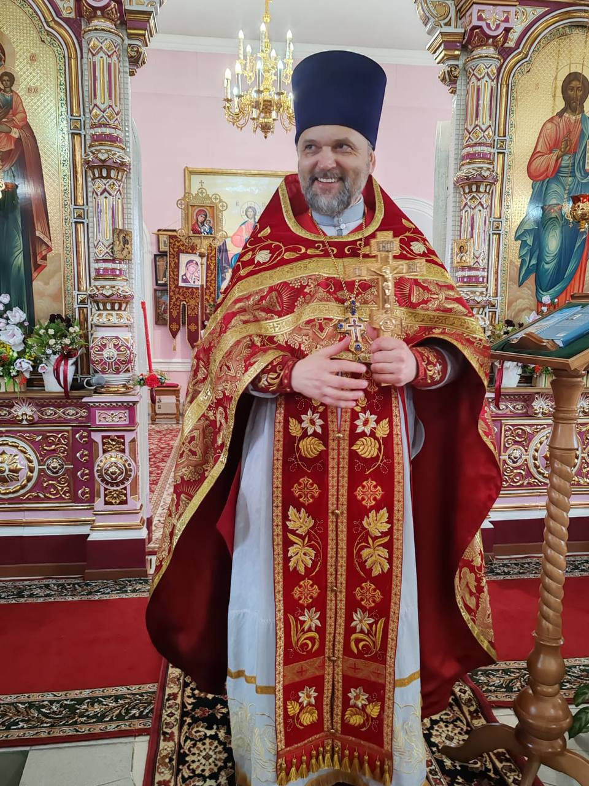

За здравие подают за живых крещёных православных христиан — о здоровье, помощи Божией и спасении.
За упокой подают за усопших крещёных православных христиан — об упокоении их душ.
Важно:
- Имена пишутся только крещёные православные (из святцев)
- Пишите полное имя, данное при крещении, а не уменьшительное (Александр, не Саша; Мария, не Маша)
- Нельзя подавать за некрещёных, иноверцев и самоубийц
Назначение: Пожертвование на храм
Работает через любой банк
яже ко спасению»
Пишите каждое имя на новой строке.
Используйте полное православное имя (не уменьшительное).
Спаси вас Бог!



Посёлок Айхал — один из алмазных городов Якутии. Само название «Айхал» в переводе с якутского означает «слава» — и этот посёлок действительно прославлен богатством недр и трудолюбием своих жителей.
Православный храм Рождества Христова был возведён в начале XXI века при поддержке Акционерной компании «АЛРОСА». Он стоит на центральной площади посёлка — ныне именуемой Соборной — и виден из разных уголков Айхала.
Особая гордость храма — фарфоровый иконостас, один из редчайших в России. Золотые купола и колокольня стали неотъемлемой частью облика посёлка — здесь встречают Рождество, Пасху, крестят детей и венчают молодожёнов.
Приход живёт полноценной церковной жизнью: регулярные богослужения, исповедь и причастие, требы, молебны, панихиды. Двери храма открыты для всех, кто ищет веру, утешение или просто тишину.